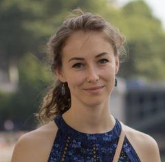
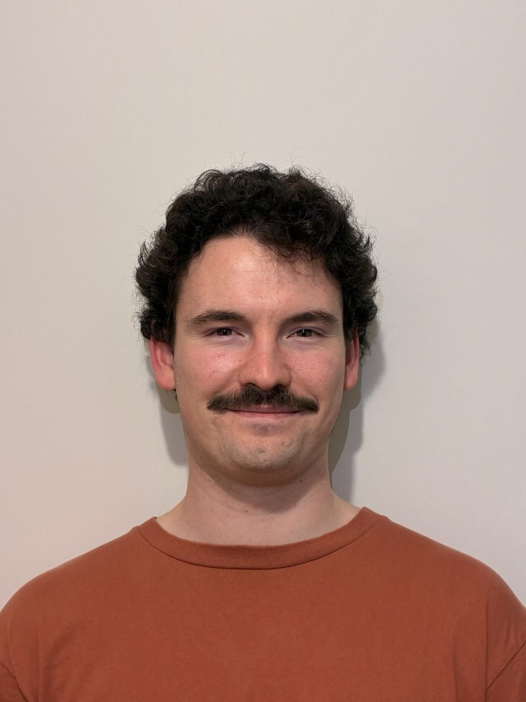
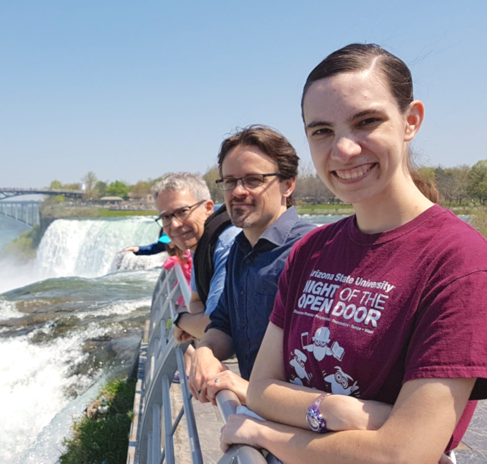
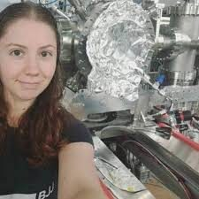

Interested in joining the lab? See Prospective students/postdocs
Current members


Chris Szeto
Research Fellow
Swinburne University of Technology
Chris is a structural biologist with expertise in X-ray crystallography and protein-ligand interactions. His current research focuses on the use of serial crystallography to investigate the dynamic mechanisms of DsbA-mediated disulfide bond transfer. Chris previously worked on immune receptor complexes and served as an industry specialist and beamline scientist on the macromolecular crystallography beamlines at the Australian Synchrotron before joining the Zatsepin Lab.
Chris leads the lab's DsbA work.

Spencer Passmore
PhD student
Swinburne University of Technology
Spencer's project focuses on simulations of ultrafast radiation damage in X-ray free-electron laser biological imaging. He is particularly focused on the chaotic ionization processes in protein crystals under ultrafast (X-ray free-electron laser) pulses. In his free time, Spencer is an avid game developer.
Papers: Heavy-element damage seeding in proteins under XFEL illumination (arXiv:2405.10298; J. Synchrotron Rad. 2025) · Optimizing the connectivity of alternate conformations to untangle protein ensemble models (bioRxiv 2026)
This could be you!
PhD student
Swinburne University of Technology
PhD project on time-resolved crystallography of disulphide bond-forming enzyme A, a high-value anti-virulence drug target targetic antibiotic resistance.
This could be you!
PhD student
Swinburne University of Technology
PhD project on nanocrystallography development - highly interdisciplinary and can be adapted to your background (physics, biochemistry, structural biology, chemistry)
This could be you!
PhD, Masters, Honours or undergraduate student
Swinburne University of Technology
See Available Student Projects and How to Apply.
Previous members

Tasman Harvey
Honours student
Swinburne University of Technology
Tasman's project explored simulated optics tuning with the Australian Synchrotron's accelerator physics group for CERN's new Future Circular Collider e+/e- (FCC-ee) and the planned Australian Synchrotron 2 (AS2).
In particular, he looked into optimizing the correction of distorted beam orbits caused by imperfections within collider and light source storage rings (e.g. magnet misalignments, field errors). Tasman's interest in accelerator physics first stemmed from working in industrial irradiation with S-band linear accelerators at Steritech Australia.

Elwyn Chandler
Undergraduate student
Swinburne University of Technology
Elwyn is an undergraduate student majoring in chemistry and physics. In the Zatsepin group, she was learning about batch micro-crystallisation and dynamic light scattering with the goal of growing and characterising protein microcrystals for serial crystallography experiments at the new Australian Synchrotron beamline, MX3.


Sabine Botha
Postdoctoral researcher, School of Physics, ASU
Next: Assistant Prof, ASU.
Derek Mendez
Postdoctoral researcher, School of Physics, ASU
Next: Staff Scientist, Berkeley National Lab
PhD Students

Natasha Stander
PhD Student
School of Molecular Science, ASU
Graduated 2019. Next: software developer and lecturer.

Susannah Holmes
PhD Student
Dept Chemistry and Physics, La Trobe University
Graduated 2021.
Yun Zhao (co-supervised; main supervisor: John Spence), graduated in 2016.
Shibom Basu (co-supervised; main supervisor: Petra Fromme), graduated in 2015. Now at ESRF.
Undergraduate Students
Swinburne:
Grand Challenges project on Muon shadow imaging, 2025
ASU:
Rick Hewitt, now in Hekstra Lab, Harvard Uni.
Cameron Howard
Capstone Computer Science project, 2016, co-supervised with Rick Kirian:
Omri Mor
Avery Benson
Amit Kulkarni
William Widjaja